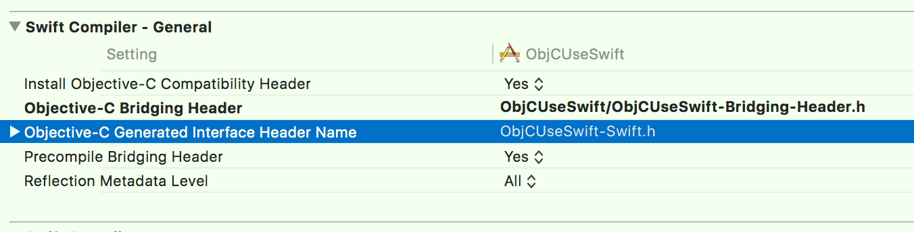
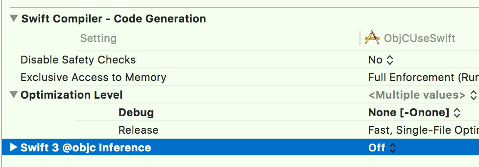

一、Swift调用ObjC
- 实现步骤：
- 1、新建Swift项目；
- 2、新建ObjC文件，比如ObjCUtil.h/m；
- a. 此时Xcode会提示是否自动创建Bridge头文件（文件名称为
#ProjectName#-Bridging-Header.h），选择自动创建； - b. 也可以手动创建Bridge头文件，只需修改"Build Setting"中的"Objective-C Briding Header"即可；
- a. 此时Xcode会提示是否自动创建Bridge头文件（文件名称为
- 3、在Bridge头文件中，进行
#import "ObjC文件.h"，之后即可在Swift调用ObjC了； - 4、新建一个Swift文件（不必继承NSObject）用于测试，比如SwiftTest.swift；
示例代码
// ObjCUtil.h #import <Foundation/Foundation.h> @interface ObjCUtil : NSObject + (void)sayClassMethod; - (void)sayObjectMethod; @end // ObjCUtil.m #import "ObjCUtil.h" @implementation ObjCUtil + (void)sayClassMethod { NSLog(@"%s", __func__); } - (void)sayObjectMethod { NSLog(@"%s", __func__); } @end// SwiftUseObjC-Bridging-Header.h #import "ObjCUtil.h"// SwiftTest.swift import Foundation class SwiftTest { // 不必继承NSObject static func test() -> Void { ObjCUtil.sayClassMethod() let objCUitl = ObjCUtil() objCUitl.sayObjectMethod() } }
二、ObjC调用Swift
实现步骤：
- 1、新建ObjC项目；
2、新建一个Swift文件（必须继承NSObject），比如SwiftUtil.swift；
a. 在选择Xcode自动创建Bridge头文件的同时，Xcode还会自动隐式创建
#ProjectName#-Swift.h，用于ObjC调用Swift；该文件中的内容为Xcode动态生成的，不需要编辑；
b. 若要将Swift类暴露给ObjC使用，则Swift类必须是NSObject的子类；
c. 从Swift4.0开始，Swift类中的方法必须显示添加@objc修饰符（Swift3.0不需要），否则ObjC无法识别；可以通过设置"Build Setting"中的"Swift 3 @objc inference"决定是否使用新特性；

3、在需要Swift类的ObjC文件中，进行
#ProjectName#-swift.h，即可在ObjC调用Swift了；4、新建ObjC文件用于测试，比如ObjCTest.h/m；
示例代码
// SwiftUtil.swift import UIKit class SwiftUtil: NSObject { // 必须继承NSObject @objc func sayObjectMethod() -> Void { print("file: \(#file), func: \(#function), lines: \(#line)") } @objc static func sayClassMethod() -> Void { print("file: \(#file), func: \(#function), lines: \(#line)") } }// ObjCTest.h #import <Foundation/Foundation.h> @interface ObjCTest : NSObject + (void)test; @end // ObjCTest.m #import "ObjCTest.h" #import "ObjCUseSwift-Swift.h" @implementation ObjCTest + (void)test { [SwiftUtil sayClassMethod]; SwiftUtil *swiftUtil = [[SwiftUtil alloc] init]; [swiftUtil sayObjectMethod]; } @end
三、Swift项目使用ObjC Pods
Swift项目中可以直接使用ObjC Pods（不需要在Bridge头文件中进行#import），在使用的地方直接
imprort 模块名即可，比如import PureLayout；# Podfile project 'SwiftObjCPods.xcodeproj' platform :ios, '11.0' target 'SwiftObjCPods' do use_frameworks! # Pods for SwiftObjCPods pod 'Alamofire', '~> 4.7' pod 'PureLayout' endimport UIKit import Alamofire import PureLayout class ViewController: UIViewController { override func viewDidLoad() { super.viewDidLoad() let view = UIView() self.view.addSubview(view) view.backgroundColor = .red view.autoCenterInSuperview() view.autoSetDimensions(to: CGSize(width: 100, height: 100)) } override func touchesBegan(_ touches: Set<UITouch>, with event: UIEvent?) { Alamofire.request("https://www.baidu.com/").responseString { (response) in debugPrint(response) } } }
四、ObjC项目使用Swift Pods
- 一般无法直接使用Swift Pods，需要定义一个Swift中介文件；通过中介文件调用Swift Pods，ObjC项目再调用中介文件；
ObjC项目的Podfile文件若使用Swift Pods，则必须使用
use_frameworks!（Cocoapods 1.4.0还不支持Swift静态库）；# Podfile project 'ObjCSwiftPods.xcodeproj' platform :ios, '11.0' target 'ObjCSwiftPods' do use_frameworks! # 必须使用 # Pods for ObjCSwiftPods pod 'PureLayout' pod 'Alamofire', '~> 4.7' end// Swift中介文件 import Foundation import Alamofire class NetworkingUitl : NSObject { @objc class func request() -> Void { Alamofire.request("https://www.baidu.com/").responseString { (response) in debugPrint(response) } } }#import "ViewController.h" #import <PureLayout/PureLayout.h> #import "ObjCSwiftPods-Swift.h" @interface ViewController () @end @implementation ViewController - (void)viewDidLoad { [super viewDidLoad]; UIView *view = [[UIView alloc] init]; [self.view addSubview:view]; view.backgroundColor = [UIColor redColor]; [view autoCenterInSuperview]; [view autoSetDimensionsToSize:CGSizeMake(100, 100)]; } - (void)touchesBegan:(NSSet<UITouch *> *)touches withEvent:(UIEvent *)event { [NetworkingUitl request]; } @end
五、Swift调用C、C++
- Swift无法直接调用C、C++，其可以通过Swift调用ObjC，ObjC再调用C、C++，间接完成Swift调用C、C++；